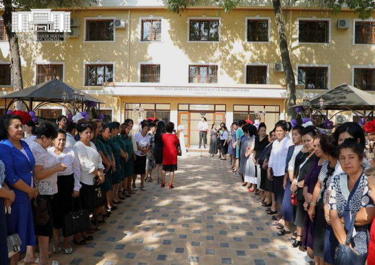

Toshkent shahar reabilitatsiya va moslashtirish markazida brifing o‘tkazildi
Toshkent shahar reabilitatsiya va moslashtirish markazida Toshkent shahar hokimio‘rinbosari, Xotin-qizlar qo‘mitasi raisi, tuman hokim o‘rinbosarlari, ommaviy axborot vositalari ishtirokida zo‘rlik ishlatishdan jabr ko‘rgan ayollarni reabilitatsiya qilish masalalariga qaratilgan brifing o‘tkazildi. Bugungi kunda shahrimizda 5 ta tumanlararo reabilitatsiya markazi tashkil etilgan bo‘lib, har bir markazda psixolog, huquqshunos, shifokorlar xizmati yo‘lga qo‘yilgan. Ushbu markazlarga o‘tgan 7 oy davomida 370 nafar fuqaro murojaat qilgan.

Ularning 128 nafariga psixologik, 107 nafariga huquqiy, 68 nafariga tibbiy, 15 nafariga bandlik bo‘yicha, 8 nafariga imtiyozli kreditlar olish borasida yordam ko‘rsatilgan. 49 ta oilaning oilaviy muammolari hal etilgan.
Brifingda shuningdek, Toshkent shahar reabilitatsiya va moslashtirish markazining faoliyati bo‘yicha batafsil ma’lumotlar berildi. Ushbu markaz joriy yilning aprel oyidan boshlab qayta qurilgan bo‘lib, zo‘rlik ishlatishdan jabr ko‘rgan va suitsidga moyilligi bo‘lgan shaxslarga o‘z vaqtida va manzilli yordam ko‘rsatish, ayollardagi ijtimoiy-psixologik muammolarni erta aniqlash va bartaraf etish maqsadida tashkil etildi. Markazda “call-center”, fuqarolar murojaatlarini qabul qilish markazi bo‘lib, bu erda 10 nafar psixologlar tomonidan kunu tun bepul xizmat ko‘rsatiladi. “Call-center” ishonch raqami 1169. Ushbu markazda psixolog va huquqshunoslar onlayn tarzda ham murojaatlarni qabul qilib, fuqarolarga yordam ko‘rsatishadi.
Shuningdek, markazda krizis-statsionar bo‘limi ham bo‘lib, zo‘rlik ishlatishdan jabr ko‘rgan ayollar va bolalar 5 kun davomida bu erda qolishadi va ularga mutaxassislar tomonidan yordam ko‘rsatiladi. Brifingda shuningdek, jurnalistlarni qiziqtirgan barcha sav ollarga javob berildi.
Mavzuga oid